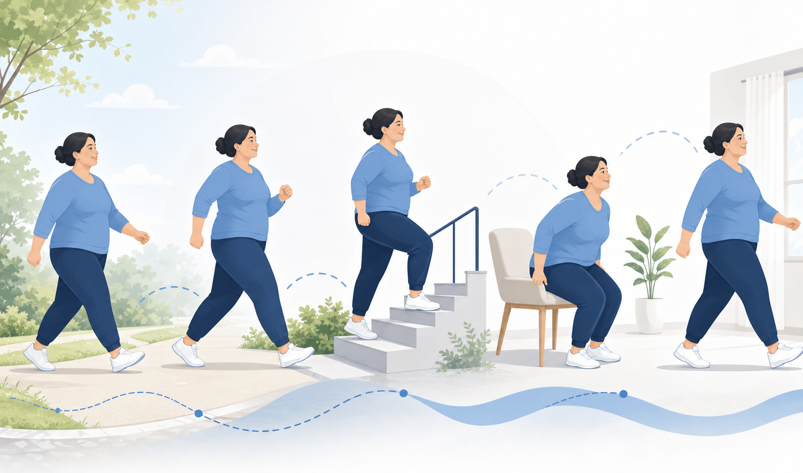
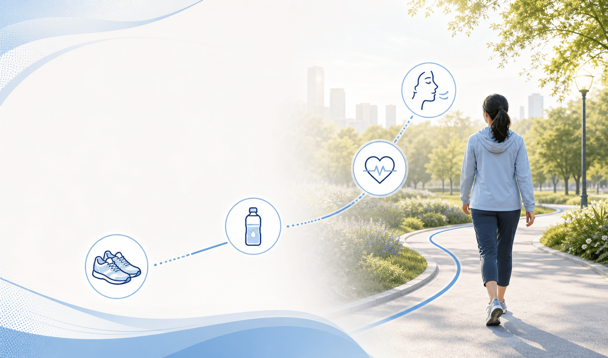
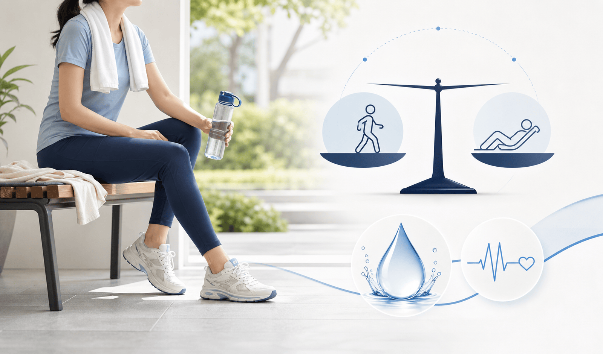
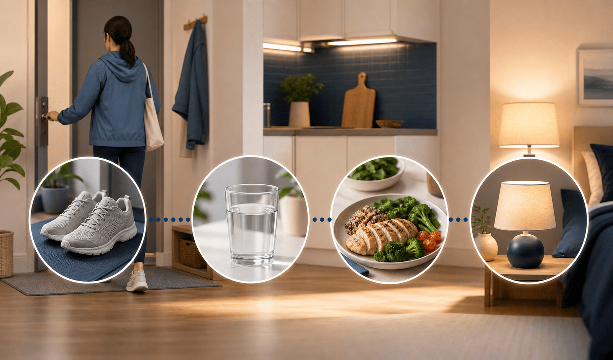

식후 10분 걷기만 붙여도 혈당 패턴과 식욕 반동을 줄이는 데 도움이 됩니다

성인 기준은 주 150분 중간 강도 유산소와 주 2일 근력운동 — 아래 1·2주차 분량은 병원의 시작 예시입니다

식사량이 줄고 수분이 부족하면 어지럼·저혈당·탈수가 생길 수 있습니다

주차·계단·청소·산책처럼 생활 안에서 활동량을 올리면 실패가 적습니다
| 이럴 때 | 이렇게 해 보세요 |
|---|---|
| 이미 있는 습관에 붙이기 | 식사 뒤 10분, 퇴근길 한 정거장 먼저 내리기, 통화하며 걷기 |
| 무릎·허리가 불편하면 | 평지 걷기, 실내 자전거, 물속 운동을 고려합니다 |
| 덤으로 좋아지는 잠 | 낮 활동량이 늘면 밤잠의 질이 좋아지고 야식 욕구도 줄 수 있습니다 |

이번 주는 오래 하는 운동보다, 식후와 일상 속에 자주 넣는 움직임이 목표입니다